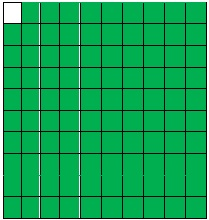
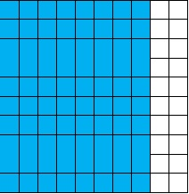

ENGAGE
A certain soap advertisement says that the soap “kills 99% of germs”. What is meant by this?
EXPLORE
It was in the 15th century when the idea of percent began. It carne from the Latin word, “per centum” which means “for every hundred”. A percent is a ratio of a number to 100. It, is represented by the symbol "%". The shaded part of the illustration shows 99%:
Compare the shaded portion with the un shaded one. Let us organize this information in a table.
| Number | Comparison | How it is Written | |
|---|---|---|---|
| Shaded | 99 | 99 out of 100 | 99% |
| Unshaded | 1 | 99 out of 100 | 99 % |
If the soap advertisement says that the soap can “kill 99% of germs”, it means that the soap is efficient enough that every time you 99/100 use it, it kills — (99 out of 100) of the germs and only 1/100 (1 out of 100) of germs is left.
EXPLAIN
Emily got a score of -- in her math quiz. What percent of the total number of items did she get correctly?The figure below represents Emily’s correct answers. One hundred boxes show the total number of items while eighty shaded boxes out of the 100 boxes show her correct answers. The Un shaded part shows the items that she did answer correctly. “80 out of 100” is the same as “80 percent” and “80%”.
Percent is expressed in two ways:
| Fraction | Symbol | Read |
|---|---|---|
| 80/100 | 80% | 80 out of 100 80 percent |
| n/100 | n% | n out of 100 n percent |
Example 1 Fill in the table below:
| Fraction | Symbol | Read |
|---|---|---|
| 1. 16/100 | ||
| 2. 40/100 | ||
| 3. | 35% | |
| 4. | 19% | |
| 5. 35/100 |
Answer
| Fraction | Symbol | Read |
|---|---|---|
| 1. 16/100 | 16% | 16 percent |
| 2. 40/100 | 40% | percent |
| 3. 35/100 | 35% | 35 percent |
| 4. 19/100 | 19% | 19 percent |
| 5. 35/100 | 35% | 35 percent |
Applications and Problem Solving
Ninety out of 150 hens lay eggs in Mang Juan’s poultry in Bulacan. What percent of the hens are laying eggs?